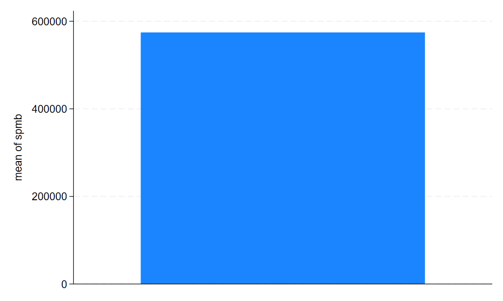
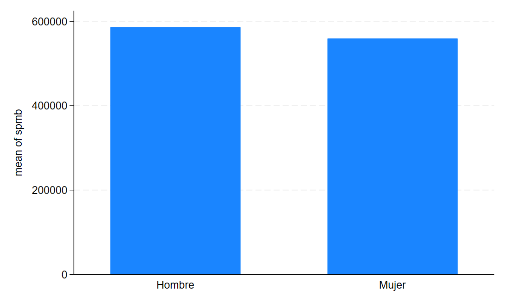
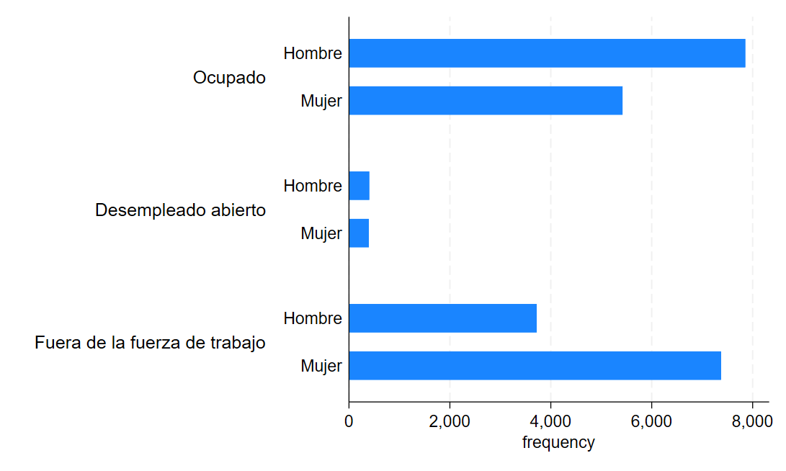
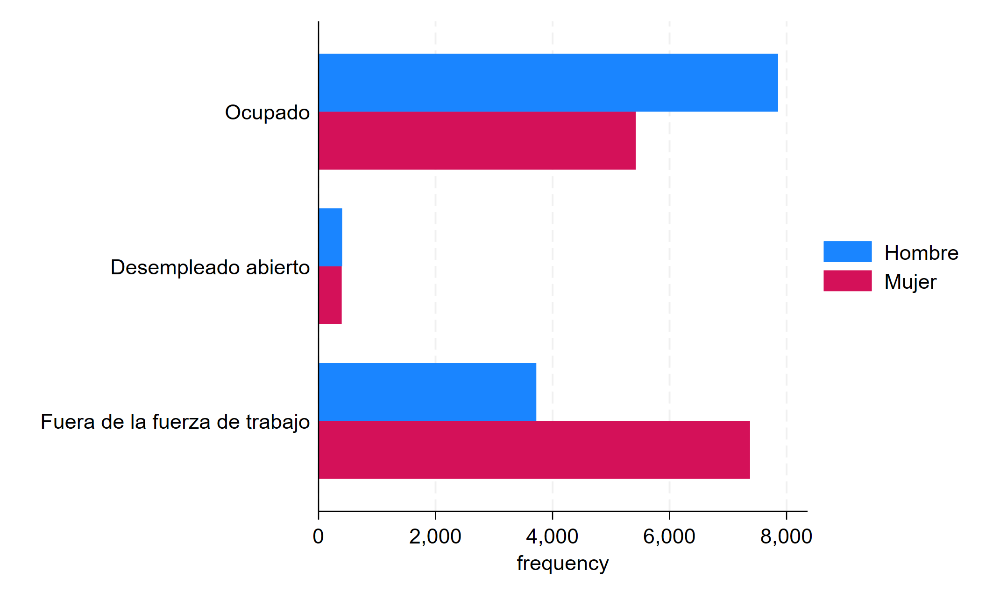
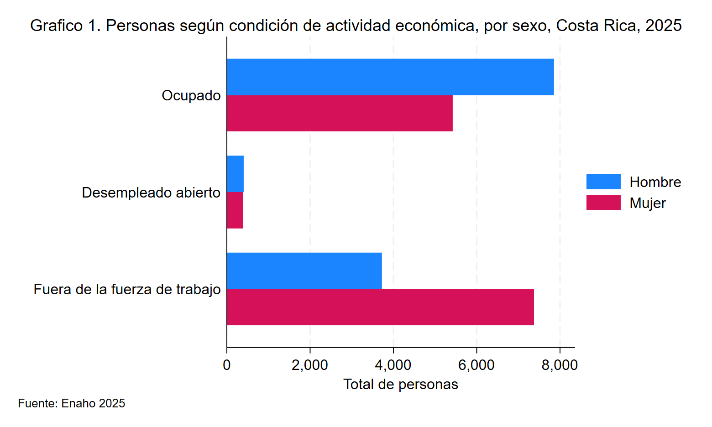
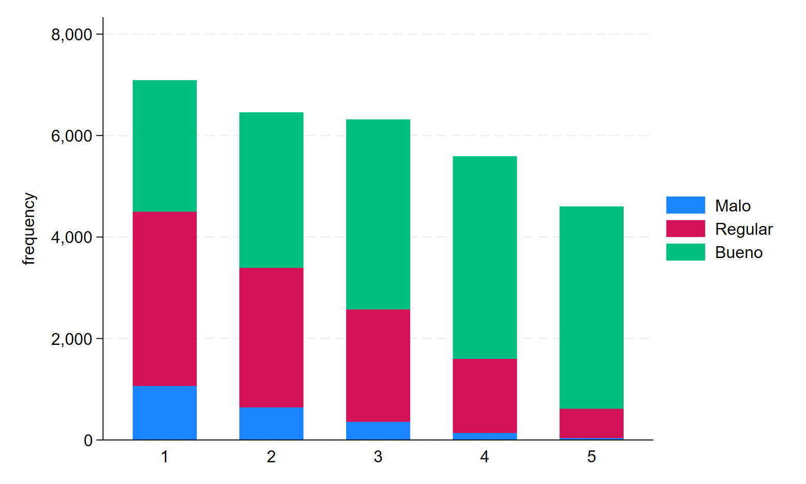
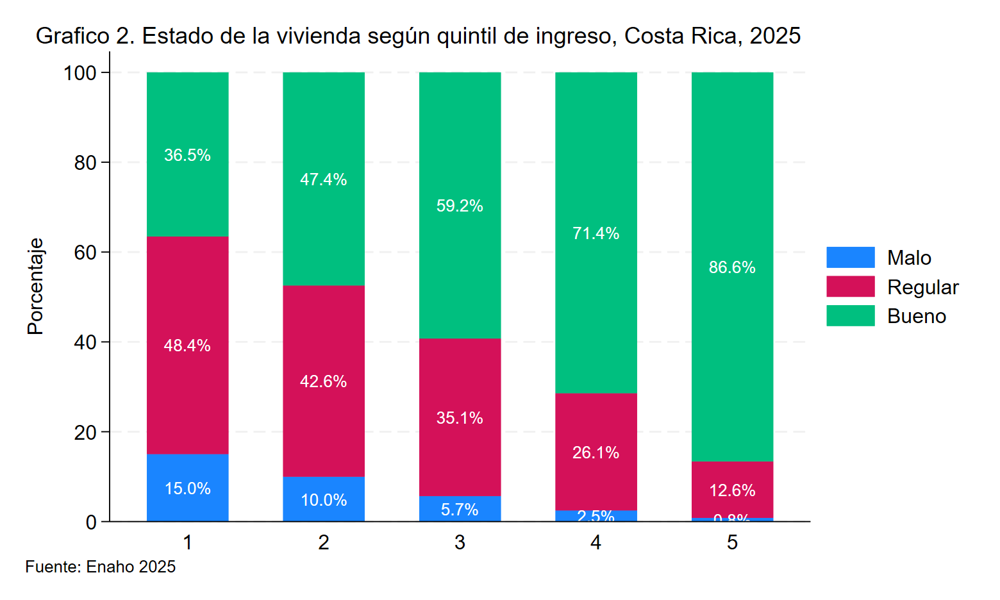
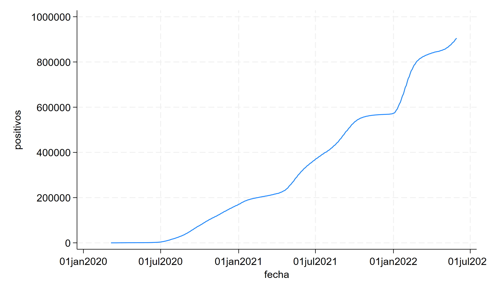
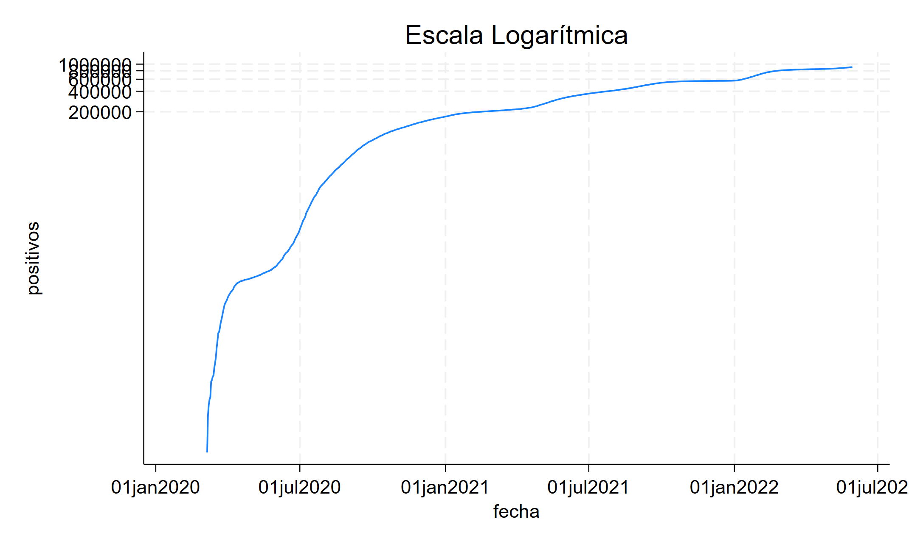
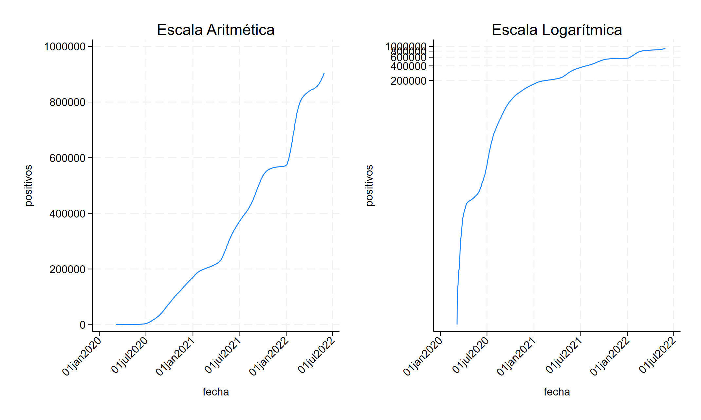

Creación de Gráficos en Stata
En este laboratorio cubriremos la realización de gráficos en Stata.
En general, la syntaxis para crear gráficos es la siguiente
Sin embargo hay que adaptarla para los diferentes tipos de gráficos que hay. En este laboratorio, veremos como hacer gráficos de barras, gráficos de barras apiladas y gráficos de líneas.
Gráficos de barras
Para realizar un gráfico de barras lo hacemos de la siguiente forma:
En este caso indicamos primero el tipo de gráfico usando bar. Además, cuando realizamos gráficos de barras tenemos que indicarle a Stata qué queremos que nos muestren las barras, indicándolo donde dice (función) y para esto tenemos varias opciones
Posibles estadísticas
- mean - promedio
- count - recuento
- percent - porcentaje
- max - máximo
Y muchas otras opciones que se pueden revisar en el menú de ayuda usando help graph bar
Ejemplo
Imagine que nos interesa conocer el salario promedio de las personas costarricenses según el sexo hombre o mujer.
En este caso, la variable que vamos a usar es spmb (Salario principal monetario bruto) y la función sería mean que corresponde al promedio
Resultado

Como puede ver el gráfico nos muestra una única barra que representa el salario promedio de las personas costarricenses. Sin embargo, no es de mucha utilidad usar un gráfico de barras para ver un único número, sino que nos interesa comparar varias categorías.
Agregar categorías
Podríamos entonces usar el gráfico de barras para comparar el salario promedio entre hombres y mujeres. Esto implica que debemos agrupar los datos por sexo.
Para lograr esto, vamos a hacer uso de las opciones, en particular de la opción over
Over
Over permite agrupar los datos según categorías
graph bar (mean) spmb, over(A4) // Salario promedio agrupando por sexo

Gráficos con leyenda
Suponga que ahora nos interesa visualizar la cantidad de personas ocupadas según su condición laboral, la cual puede ser (ocupada, desempleada o fuera de la fuerza de trabajo)
En este caso vamos a usar un gráfico de barras horizontales, por lo que usamos hbar y la función count para contar el total de personas según su condición laboral.
graph hbar (count), over(A4) over(CondAct) // grafico de barras
// horizontales sin leyenda
Resultado

Al observar el gráfico, note que se visualizaría mejor usando colores diferentes según sexo en lugar de tener más barras. Para esto agregamos la opción asyvars al final.
asyvars
La opción asyvars nos permite usar como leyenda la variable en el primer over() en este caso A4
graph hbar (count), over(A4) over(CondAct) asyvars // asyvars
// hace que el gráfico separe la variable A4 (sexo) por color

Finalmente, note que el gráfico que tenemos está incompleto, pues le faltan varias partes como:
- Título
- Títulos de eje
- Número de gráfico
- Fuente
Cada parte del gráfico la podemos agregar con las siguientes opciones
| Parte | Opción de Stata |
|---|---|
| Título | title("Aqui va el título") |
| Títulos de eje | xtitle("Titulo eje x") ytitle("Titulo eje y") |
| Leyenda | legend(label(1 "Hombre") label(2 "Mujer")) |
| Fuente | note("Fuente:...") |
graph hbar (count), over(A4) over(CondAct) asyvars ////
title("Grafico 1. Personas según condición de actividad económica, por sexo, Costa Rica, 2025", size(medium) span) ///
ytitle("Total de personas") ///
note("Fuente: Enaho 2025", span) ///
legend(label(1 "Hombre") label(2 "Mujer"))

Gráficos de barras apiladas 100%
Un gráfico de barras apiladas se genera igual que un gráfico de
barras añadiendo la opción stack.
Con valores absolutos
Por ejemplo, suponga que queremos generar un gráfico de barras apiladas que muestre el estado de la vivienda según el quintil de ingreso

Con porcentajes
Si queremos mostrar las barras como porcentaje, simplemente añadimos la opción percentage
graph bar (count), over(EFI) over(Q_IPCN) asyvars stack percentage ///
blabel(bar, size(small) position(center) format(%2.1f) suffix("%") color(white)) /// // blabel permite añadir los porcentajes a cada barra
title("Grafico 2. Estado de la vivienda según quintil de ingreso, Costa Rica, 2025", size(medium) span place(left)) ///
ytitle("Porcentaje") xtitle("Quintil de ingreso") ///
note("Fuente: Enaho 2025", span)

Gráficos de líneas
Para este ejemplo vamos a tomar los datos de número de casos positivos de COVID durante la pandemia
El archivo cuenta con la fecha y el número de casos positivos acumulado. Este es un caso ideal para usar un gráfico de líneas, ya que tenemos una serie de tiempo.
Para realizar gráficos de líneas en Stata usamos la siguiente syntaxis
En nuestro caso, el ejemplo quedaría de la siguiente forma

El gráfico nos muestra un rápido crecimiento en la cantidad de casos positivos de COVID durante los años de la pandemia
Escala semilogarítmica
Si quisiéramos determinar el ritmo al que crecían los contagios (si era creciente, decreciente o se mantenía constante), entonces podemos usar un gráfico con escala semi-logarítmica
Para hacer un gráfico con escala semi-logarítmica, simplemente usamos la opción yscale(log)

Finalmente podemos combinar gráficos usando graph combine
*Guardar grafico de lineas
graph twoway line positivos fecha, title("Escala Aritmética") ///
xlabel(#6, angle(45)) saving(aritmetico, replace)
*Guardar grafico de lineas con escala logaritmica
graph twoway line positivos fecha, title("Escala Logarítmica") yscale(log)
xlabel(#6, angle(45)) saving(logaritmico, replace)
*Combinar ambos graficos y ver ritmo de crecimiento
graph combine aritmetico.gph logaritmico.gph
graph export "combinado.png"

¿Qué puede concluir acerca de la tasa de crecimiento de casos positivos?